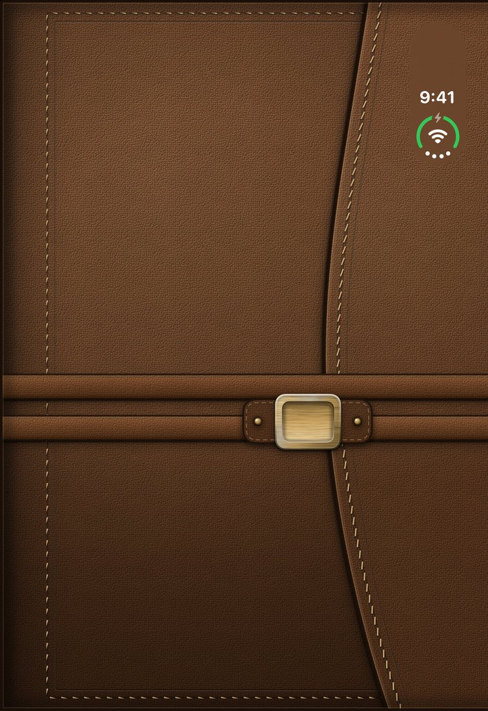
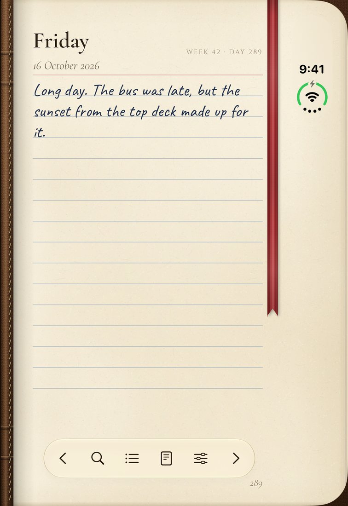
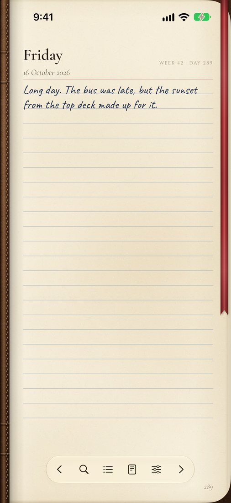
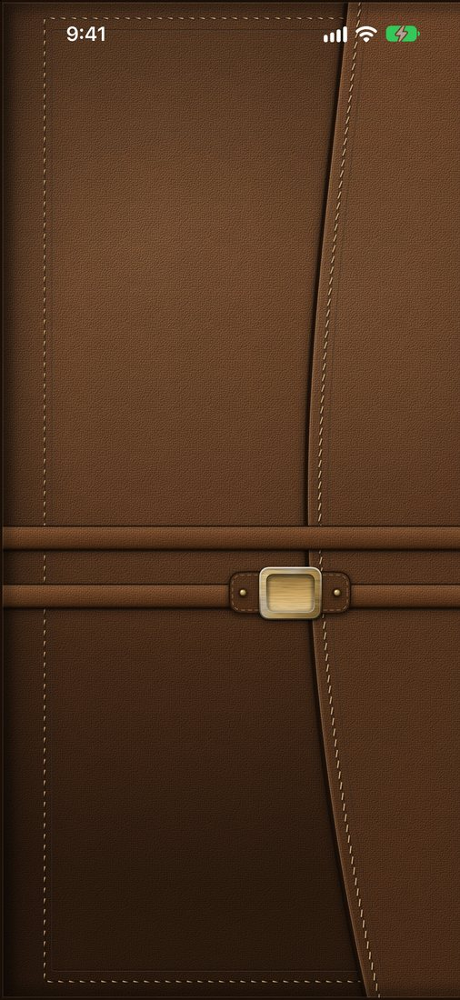
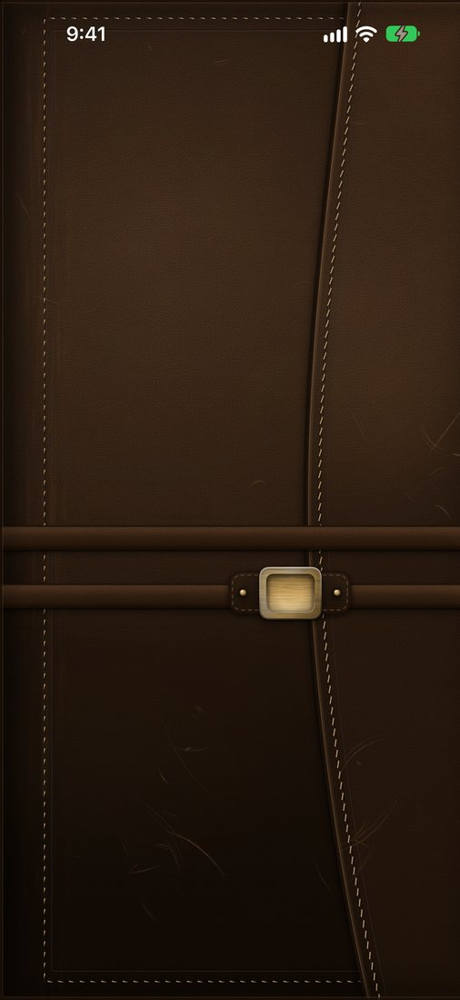
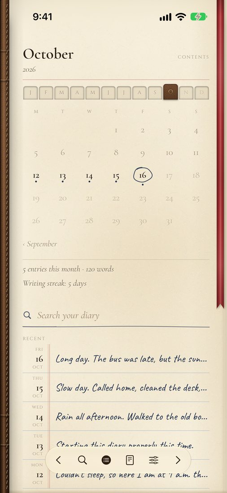

A leather pocket diary for iPhone
Open your phone.
Open your diary.
Clasp turns iPhone Duo into a pocket diary bound in leather. Unfold it and the diary opens to today’s page. Fold it, and the cover clasps shut.
For iPhone Duo and any iPhone with iOS 27 or later.

I The ritual
A diary you open, not an app you launch.
On iPhone Duo, Clasp follows the hinge. Unfold your phone and the diary opens to today, with yesterday on the facing page and the sound of leather and the clasp. Fold it, and the cover clasps shut.
- TodayEvery day has its own dated page, waiting when you open the diary.
- YesterdayOn iPhone Duo the facing page is yesterday, so you can read back as you write.
- Any iPhoneOn other iPhones Clasp shows one page at a time beside a leather spine. Tap the cover to open it.

II The page
Paper that feels like paper.
Long day. The bus was late, but the sunset from the top deck made up for it.
- Ruled or blankWrite between the lines, or on a clean page. Ink that looks handwritten, or a printed serif.
- Turned by handPages curl as you turn them. Fold a corner down to mark a day, and the crease stays.
- A satin ribbonHanging across the page, as in a bound diary.

III The leather
Leather that wears in, not out.
The cover ages as you write. It deepens and takes on a gloss, polishes where you hold it, rubs lighter at the edges and gathers fine scratches that soften over time.
- One of a kindEvery diary wears in its own way, so no two covers look the same.
- Your choicePrefer it new? Turn off Age the leather in Settings, and turn it back on whenever you like.


IV The index
Find any day in a moment.
The index is a month calendar with an ink dot on every day you wrote. Search every page you’ve written and jump straight to it.
- SearchFind a word or a name across the whole diary.
- ExportSave any week or month as a PDF, drawn from the same pages, to print or keep.

V Kept private
Your diary stays yours.
Clasp has no servers of its own. Your pages live on your iPhone and in your own private iCloud, which syncs them between your devices. I never see them.
I
No account
Nothing to sign up for and no password to remember. Open the diary and write.
II
No ads or tracking
Clasp doesn’t collect personal data, and has no analytics, ads or trackers.
III
A lock of its own
Lock the diary with Touch ID, Face ID or your passcode. Tap the brass clasp to open it.
The details are in the Privacy Policy.
Clasp: Leather Pocket Diary
One page a day.
A single purchase, with nothing to subscribe to.
For iPhone Duo and any iPhone with iOS 27 or later.